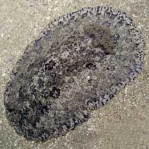
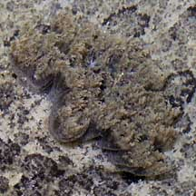
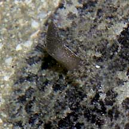
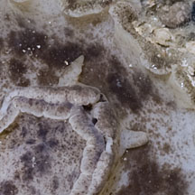
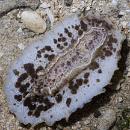
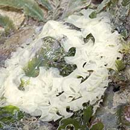
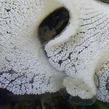
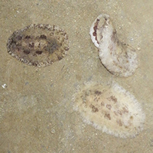

|
|
| nudibranchs text index | photo index |
| Phylum Mollusca > Class Gastropoda > sea slugs > Order Nudibranchia |
| Spotted
foot nudibranch Tayuva lilacina Family Discodorididae updated May 2020 Where seen? This large nudibranch is well camouflaged and thus often overlooked. Even when discovered, it's quite boring so most people don't get excited about it. On coral rubble and encrusted rocks and under stones. Commonly seen on our Northern shores. It appears to be seasonally common. It was previously known as Discodoris lilacina. Features: 8-10cm long. Broad, somewhat stiff body that looks like coral rubble. Body pattern camouflages it well against sand and rubble, usually grey or brown, sometimes pinkish. Faint dark ovals about 3-4 in three rows along the body surface. The pale underside has dark blotches and spots. Large rhinophores and frilly gills. There are several similar looking nudibranchs. One of them is Discodoris fragilis which is said to easily break off (autotomise) its mantle skirt when handled. The ones we have handled don't do this, but they do produce a LOT of slime which is really hard to wipe off afterwards. Dr Bill Rudman considers the older name Discodoris lilacina more suitable for all the animals that might be called Discodoris fragilis. |
 Chek Jawa, Jun 05 |
 Feathery gills. |
 Rhinophore. |
|
 Tiny oral tentacles. |
 Brown spots on the underside. Pulau Sekudu, May 12 |
 Laying eggs. Pulau Sekudu, Jul 05 |
 Eggs. Pulau Sekudu, Jul 05 |
 |
| Spotted foot nudibranchs on Singapore shores |
On wildsingapore
flickr
|
| Other sightings on Singapore shores |
 Pulau Hantu, Oct 14 Photo shared by Toh Chay Hoon on facebook. |
Links
|